As Ferramentas de Segurança do IPsec
Após definirmos o escopo da proteção através dos Modos de Operação (Transporte ou Túnel), o próximo passo é entender quais são as ferramentas que o IPsec utiliza para efetivamente aplicar a segurança aos dados. Para essa tarefa, a arquitetura original do IPsec propôs duas ferramentas distintas e especializadas: o Authentication Header (AH) e o Encapsulating Security Payload (ESP).
O AH foi concebido com um único propósito: garantir a autenticidade e a integridade dos dados. Ele atua como um "selo digital" inviolável, assegurando que o pacote não foi modificado em trânsito e que realmente veio do remetente correto.
O ESP, por sua vez, foi projetado primariamente para garantir a confidencialidade. Ele funciona como um "cofre", criptografando o conteúdo do pacote para que apenas o destinatário com a chave correta possa acessá-lo.
Embora ambos sejam padrões, a realidade da internet moderna, especialmente a necessidade de atravessar redes com NAT, tornou o AH impraticável na maioria dos cenários. Por essa razão, o ESP, que evoluiu para também oferecer integridade de forma compatível com NAT, é hoje a solução dominante e universalmente implementada.
IMPORTANTE: Dois Tipos de Autenticação
É crucial distinguir dois tipos de "autenticação" no ecossistema IPsec. Nesta página, abordaremos a autenticação de dados, realizada pelo AH e pelo ESP. Seu objetivo é verificar a integridade e a origem de cada pacote individualmente durante a transmissão.
Mais adiante, na página sobre o IKEv2, veremos a autenticação de pares (ou de entidades). Esse é o processo inicial onde os próprios dispositivos provam suas identidades um ao outro (usando certificados ou chaves pré-compartilhadas) para estabelecer um canal de comunicação confiável.
A seguir, vamos explorar a mecânica de cada um para entender suas forças e, no caso do AH, sua principal fraqueza.
Authentication Header (AH) – O Especialista em Integridade
O AH (Authentication Header) é um protocolo da suíte IPsec projetado com um foco singular: garantir a integridade dos dados e a autenticidade da origem do pacote. Por não prover confidencialidade, ele não utiliza algoritmos de criptografia, mas sim algoritmos de autenticação (como HMAC-SHA-256) para gerar sua "assinatura".
Seguindo a natureza modular do IPsec, o AH define o método de proteção e o formato de seu cabeçalho, mas os algoritmos de autenticação específicos são definidos em documentos separados, permitindo que novos algoritmos sejam adicionados no futuro. Da mesma forma, o mecanismo de proteção anti-replay, baseado em um número de sequência, é uma característica padrão do protocolo. Embora um receptor possa ser configurado para não verificar os números de sequência, o remetente deve sempre incluí-los, partindo do princípio que a proteção está ativa.
Assim como o ESP, o AH é um protocolo versátil. Ele pode ser aplicado de duas formas:
- Modo Transporte: Para proteger o payload de um protocolo da camada superior.
- Modo Túnel: Para proteger um datagrama IP inteiro.
Ele pode ser usado sozinho, em conjunto com o ESP, ou para proteger outros protocolos de tunelamento, como L2TP e GRE. No entanto, a forma como o AH provê a integridade é sutilmente diferente daquela oferecida pelo ESP, e essa diferença tem implicações profundas: o AH também autentica porções do cabeçalho IP externo, um detalhe que se tornará crucial em nossa análise.
O Cabeçalho AH
Para prover seus serviços, o AH insere seu próprio cabeçalho no pacote. O AH é um protocolo IP nativo, identificado pelo número de protocolo 51. Quando um sistema recebe um pacote com esse número no campo "Protocolo" (em IPv4) ou "Próximo Cabeçalho" (em IPv6), ele sabe que deve processá-lo como um pacote AH.
A estrutura do cabeçalho AH é relativamente simples, pois não lida com criptografia.
Vamos detalhar cada um de seus campos:
- Next Header (Próximo Cabeçalho): Um campo de 8 bits que identifica o tipo de cabeçalho que vem imediatamente após o cabeçalho AH. Em Modo Transporte, geralmente indica o protocolo da camada superior (ex: 6 para TCP ou 17 para UDP). Em Modo Túnel, indica o protocolo do pacote encapsulado (4 para IPv4 ou 41 para IPv6).
- Payload Len (Tamanho do Payload): Um campo de 8 bits que especifica o tamanho do cabeçalho AH em palavras de 32 bits, menos 2.
- Reserved (Reservado): Um campo de 16 bits reservado para uso futuro, que deve ser preenchido com zeros.
- SPI (Security Parameter Index): O identificador de 32 bits que, junto com o endereço de destino e o protocolo, aponta para a SA correta na SAD do receptor.
- Sequence Number Field (Número de Sequência): O contador de 32 bits, que se incrementa a cada pacote, usado para prover a proteção contra ataques de repetição.
- Integrity Check Value (ICV) / Authentication Data: Este é o coração do AH. É um campo de tamanho variável (geralmente 96 ou 128 bits) que contém a "assinatura" ou o hash calculado sobre o pacote. É o resultado do algoritmo de autenticação.
Algoritmos de Autenticação
O AH não define um algoritmo de autenticação específico, mas sim um framework para utilizá-los.
As implementações modernas, conforme os RFCs atuais (como o RFC 4302), devem suportar algoritmos muito mais robustos da família SHA-2. O padrão hoje é o HMAC-SHA2-256-128, que utiliza o algoritmo SHA-256 e trunca o resultado para 128 bits, oferecendo um nível de segurança adequado para as redes atuais.
Modos AH
O Authentication Header (AH) pode ser aplicado de duas formas distintas, dependendo do escopo da proteção desejada: Modo Transporte ou Modo Túnel.
Inicialmente temos o datagrama original:
A partir dele, vamos aplicar o AH com ambos os modos.
Modo Transporte
Em Modo Transporte, o AH é utilizado para prover segurança fim-a-fim entre dois hosts, protegendo o conteúdo da camada de transporte. Neste modo, o cabeçalho AH é inserido imediatamente após o cabeçalho IP original e antes do cabeçalho do protocolo da camada superior (como TCP ou UDP). O cabeçalho IP original é mantido, e os endereços de origem e destino não são alterados.

Modo Túnel
Em Modo Túnel, o AH protege o pacote IP inteiro, encapsulando-o. Um novo cabeçalho IP ("externo") é adicionado ao pacote. Este modo é tipicamente usado quando o ponto de aplicação da segurança (um gateway/firewall) é diferente do ponto de origem do pacote. O pacote original, com seus endereços de origem e destino, se torna o payload do novo pacote.
A Utilidade Limitada do Túnel com AH
Uma questão importante surge com o uso do AH em Modo Túnel. Um dos principais benefícios do Modo Túnel é a proteção contra análise de tráfego, pois ele oculta os endereços IP dos hosts que estão de fato se comunicando.
No entanto, como o AH não oferece confidencialidade, o pacote IP original encapsulado (incluindo o cabeçalho IP interno) trafega em texto claro. Embora sua integridade seja garantida, qualquer um que intercepte o pacote ainda pode ver quem são os verdadeiros remetente e destinatário.
Por essa razão, o uso do Modo Túnel apenas com o AH é considerado de utilidade muito limitada, pois perde o principal benefício do tunelamento. Seu uso é prático apenas quando combinado com o ESP, onde o ESP provê o túnel criptografado e o AH adiciona uma camada extra de autenticação (uma configuração conhecida como túnel aninhado).
O Processo de Autenticação
O mecanismo de autenticação do AH é o que o define e, como veremos, o que dita seu destino. O processo baseia-se no cálculo de um ICV (Integrity Check Value).
A característica que diferencia o AH do ESP está nos dados que ele protege. Para calcular o ICV, o AH inclui não apenas todo o payload que o sucede, mas também campos do cabeçalho IP que são considerados imutáveis ou previsíveis durante o trânsito.
No entanto, campos "mutáveis" do cabeçalho IP, que podem ser legitimamente alterados por roteadores no caminho (como o TTL, Flags de fragmentação e o Header Checksum), são temporariamente zerados antes do cálculo para não invalidar a assinatura.
O processo pode ser resumido da seguinte forma:
No Remetente (Processamento de Saída)
- O sistema monta o cabeçalho AH, preenchendo todos os campos, mas deixando o campo do ICV com zeros.
- Os campos mutáveis do cabeçalho IP são zerados na memória.
- O ICV é calculado sobre o pacote inteiro usando um algoritmo de hash e a chave secreta da SA.
- O ICV resultante é inserido no campo Authentication Data do cabeçalho AH.
- Os campos mutáveis do cabeçalho IP são restaurados aos seus valores originais e o pacote é enviado.
No Receptor (Processamento de Entrada)
- Após encontrar la SA correta, o sistema verifica o Número de Sequência para se proteger contra ataques de repetição.
- O ICV recebido no cabeçalho AH é armazenado temporariamente, e o campo é zerado na cópia do pacote.
- Os mesmos campos mutáveis do cabeçalho IP são zerados.
- O sistema recalcula o ICV sobre o pacote inteiro, usando os mesmos parâmetros da SA.
- O ICV recalculado é comparado com o ICV original. Se forem idênticos, o pacote é considerado autêntico e íntegro. Se forem diferentes, o pacote é descartado imediatamente.
Este processo garante um altíssimo nível de integridade. Contudo, a decisão de incluir os campos do cabeçalho IP no cálculo é exatamente o que nos leva à sua falha crítica em redes modernas.
A Falha Fatal: AH e NAT
Até agora, o AH parece um protocolo robusto para seu propósito. No entanto, ele possui uma falha de design que, na prática, o torna quase inutilizável na internet moderna. Essa falha não está no protocolo em si, mas em sua total incompatibilidade com uma tecnologia onipresente: o NAT (Network Address Translation).
O que é o NAT?
O NAT é a tecnologia que permite que múltiplos dispositivos em uma rede privada (com IPs como 192.168.x.x) compartilhem um único endereço IP público para acessar a internet. A sua função mais comum é reescrever o endereço IP de origem no cabeçalho dos pacotes que saem da rede local, trocando o IP privado pelo IP público do roteador.
O Conflito Inevitável
Aqui reside o conflito fundamental: O AH foi projetado para garantir que nada no pacote mude, tratando o endereço IP de origem como um campo sagrado e imutável que faz parte de sua "assinatura" (o ICV). O NAT foi projetado para fazer exatamente o oposto: sua principal função é mudar o endereço IP de origem para permitir a comunicação. O AH não consegue distinguir a ação legítima e necessária do NAT de um ataque de modificação de dados (man-in-the-middle). Para o AH, qualquer alteração é uma violação de integridade.
Um Cenário Prático da Falha
Vamos visualizar a falha passo a passo. Imagine um Host
A (192.168.1.50) que quer se comunicar com
um Servidor B na internet. O roteador da rede do Host A
usa NAT e tem o IP público 200.20.10.5.
Criação do Pacote (Host A)
O Host A cria um pacote e o protege com AH. Ele calcula
o ICV_A incluindo seu próprio IP de origem
(192.168.1.50) na conta.
Pacote que sai do Host A: [ IP Hdr (src=192.168.1.50) ] [ AH (ICV_A) ] [ Dados ]A Tradução de Endereço (Roteador NAT)
O pacote chega ao roteador. O roteador realiza o NAT, reescrevendo o endereço de origem para seu IP público, e envia o pacote para a internet.
Pacote na internet: [ IP Hdr (src=200.20.10.5) ] [ AH (ICV_A) ] [ Dados ]Note que o endereço IP de origem mudou, mas o ICV_A dentro do cabeçalho AH, que foi calculado com o IP antigo, continua o mesmo.
A Verificação (Servidor B)
O Servidor B recebe o pacote. Para verificar sua
integridade, ele refaz o cálculo do ICV. No entanto, ele
realiza o cálculo usando o pacote que recebeu, que tem
como IP de origem 200.20.10.5. O resultado
desse novo cálculo, ICV_B, será inevitavelmente
diferente de ICV_A.
O Resultado: Falha na Comunicação
Como ICV_A ≠ ICV_B, o IPsec do servidor
interpreta a mudança legítima do NAT como um ataque. A
verificação de integridade falha, e o pacote é
descartado. A comunicação entre o Host A e o Servidor B
é impossível.
Veredito
Essa incompatibilidade fundamental tornou o AH uma solução impraticável para a grande maioria dos cenários do mundo real, onde redes privadas e NAT são o padrão. Foi essa limitação que abriu o caminho para que o ESP, que não sofre desse problema, se tornasse a solução dominante e completa do IPsec, como veremos a seguir.
Encapsulating Security Payload (ESP) – A Solução Completa
O ESP (Encapsulating Security Payload) é o segundo protocolo de proteção da suíte IPsec. Ele foi projetado para ser uma ferramenta versátil, capaz de oferecer um conjunto completo de serviços de segurança:
- Confidencialidade: Através da criptografia do payload.
- Integridade dos Dados: Garantindo que os dados não foram alterados.
- Autenticação da Origem dos Dados: Verificando a origem do pacote.
- Proteção Anti-Replay: Impedindo que pacotes antigos sejam reenviados maliciosamente.
Seguindo o princípio de modularidade do IPsec, o ESP define um formato de cabeçalho e um método de processamento, mas não os algoritmos criptográficos específicos. A escolha do algoritmo de cifragem (para confidencialidade) e do algoritmo de autenticação é determinada pela Associação de Segurança (SA) negociada. Essa separação torna o ESP um mecanismo extensível, que pode evoluir e incorporar novos algoritmos sem que o protocolo base precise ser alterado.
O mecanismo de proteção anti-replay, baseado em um número de sequência, é uma característica padrão e integral do protocolo. O remetente é sempre obrigado a incluir e incrementar o número de sequência em cada pacote. A verificação desse número é uma decisão do receptor; no entanto, como o benefício da proteção é inteiramente seu, a prática comum e recomendada é que ela esteja sempre ativada.
Conforme vimos na página anterior, todos esses serviços de segurança do ESP podem ser aplicados tanto em Modo Transporte, para proteger a comunicação fim-a-fim, quanto em Modo Túnel, para encapsular e proteger datagramas IP inteiros.
Cabeçalho ESP
Quando o ESP é utilizado, ele insere seus próprios campos no datagrama IP. Ele é identificado pelo número de protocolo 50. Em um pacote IPv4, este valor 50 é colocado no campo "Protocolo" do cabeçalho IP. Em IPv6, ele é colocado no campo "Próximo Cabeçalho" do último cabeçalho de extensão antes do ESP.
Uma característica fundamental do design do ESP é que o escopo da confidencialidade (o que é criptografado) e o da autenticidade (o que é verificado pela assinatura) não são idênticos. Isso é uma decisão deliberada de engenharia para permitir um processamento eficiente, como veremos a seguir.
Estrutura Geral do Pacote ESP
Diferente do AH, que possui apenas um cabeçalho, o pacote ESP é composto por um cabeçalho, um payload criptografado, um trailer (rodapé) e um campo final de autenticação.
Vamos detalhar cada componente:
Cabeçalho ESP (Não Criptografado, Autenticado)
Esta parte fica "em claro" para que o receptor possa iniciar o processamento.
- SPI (Security Parameter Index): O identificador de 32 bits que aponta para a SA correta na SAD do receptor. Ele precisa estar visível, pois sem ele o receptor não saberia qual chave usar para decifrar o resto do pacote (um problema de "ovo e galinha").
- Sequence Number (Número de Sequência): O contador de 32 bits para a proteção anti-replay. Ele também não é criptografado para que o receptor possa verificar se um pacote é um "replay" antes de gastar recursos computacionais para decifrá-lo.
Carga Criptografada (Criptografado e Autenticado)
Esta é a porção do pacote que é tornada ilegível para quem está na rede.
- Payload Original: Os dados que estão sendo protegidos (o segmento TCP/UDP ou o pacote IP interno).
- IV (Initialization Vector): Muitos algoritmos de criptografia exigem um Vetor de Inicialização para garantir que a mesma mensagem criptografada duas vezes produza resultados diferentes.
- Preenchimento (Padding): Bytes adicionais que servem a dois propósitos: (1) Alinhar os dados para que se ajustem ao tamanho de bloco exigido por certas cifras. (2) Ocultar o tamanho real da mensagem, oferecendo alguma proteção contra análise de tráfego.
- Tamanho do Preenchimento e Próximo Cabeçalho (Trailer ESP): Esses dois campos ficam no final da área criptografada. O primeiro informa quantos bytes de preenchimento foram usados, e o segundo informa qual era o protocolo do payload original (ex: TCP), uma informação que também precisa ser mantida confidencial.
Dados de Autenticação (Não Criptografado, Opcional)
ICV (Integrity Check Value): Este campo só existe se um algoritmo de autenticação foi negociado na SA. Ele contém o hash (a "assinatura") que garante a integridade e a autenticidade do pacote. É importante notar que o cálculo do ICV cobre o Cabeçalho ESP e toda a Carga Criptografada, mas não o cabeçalho IP externo, o que é a chave para sua compatibilidade com o NAT.
Modos ESP
O campo Próximo Cabeçalho (Next Header), localizado no trailer do ESP e, portanto, criptografado, indica o tipo de dados contido no payload. Seu valor e o posicionamento do cabeçalho ESP no pacote dependem do modo de operação escolhido:
Novamente, voltamos ao mesmo datagrama original:
A partir dele, vamos aplicar o ESP com ambos os modos.
Modo Transporte
Conforme discutido anteriormente, o Modo Transporte é usado para proteger a comunicação fim-a-fim, focando no payload da camada superior. O cabeçalho ESP é inserido entre o cabeçalho IP original e o cabeçalho do protocolo da camada superior (ex: TCP, UDP). Neste modo, o campo Next Header dentro do trailer ESP indicará o protocolo da camada superior que foi encapsulado e protegido. Por exemplo, se o ESP estiver protegendo um segmento TCP, o valor será 6.
Modo Túnel
O Modo Túnel é usado para encapsular um datagrama IP inteiro, o que é fundamental para a criação de VPNs. O datagrama IP original inteiro é tratado como o payload. O cabeçalho ESP é inserido antes deste datagrama IP original, e um novo cabeçalho IP (externo) é adicionado ao início de todo o pacote. Neste modo, o campo Next Header dentro do trailer ESP indicará que o payload protegido é um pacote IP. O valor será 4 para um pacote IPv4 encapsulado ou 41 para um pacote IPv6 encapsulado.
O Processo de Proteção do ESP
O processamento de um pacote com ESP segue um princípio fundamental de segurança: o texto cifrado é autenticado, e não o texto claro. Isso significa que, na saída, a criptografia ocorre primeiro; na entrada, a autenticação ocorre primeiro.
As implementações modernas de ESP utilizam algoritmos robustos como AES (Advanced Encryption Standard) para cifragem e famílias SHA-2 (ex: SHA-256) para autenticação. Idealmente, são empregadas cifras AEAD (Authenticated Encryption with Associated Data), que combinam criptografia e autenticação em uma única operação eficiente e segura. Para simplificar a descrição do fluxo abaixo, vamos considerar o uso de um AEAD.
No Remetente (Processamento de Saída)
- Construção do Pacote ESP: O sistema operacional monta o pacote ESP, incluindo o payload original, o preenchimento (padding), o tamanho do preenchimento e o próximo cabeçalho.
- Criptografia e Autenticação (AEAD): Utilizando o algoritmo AEAD e a chave da SA, os dados são criptografados e um ICV é calculado sobre o cabeçalho ESP e os dados já criptografados.
- Montagem Final: O cabeçalho ESP, a carga criptografada e o ICV são reunidos para formar o pacote ESP final, que é então encapsulado com o cabeçalho IP apropriado e enviado.
Nota sobre Fragmentação: Embora o ESP possa tecnicamente lidar com pacotes fragmentados após a aplicação do IPsec, a prática recomendada continua sendo "fragment-before-encrypt".
No Receptor (Processamento de Entrada)
- Reagrupamento (se necessário): Se o pacote IPsec recebido estiver fragmentado, ele deve ser primeiro reagrupado pela camada IP.
-
Identificação da SA: O receptor
utiliza a tupla
<SPI, Endereço de Destino, Protocolo (50)>para encontrar a SA correspondente na SAD. Se falhar, descarta. - Verificação Anti-Replay: O Número de Sequência é verificado. Se falhar, descarta.
- Autenticação e Decifragem (AEAD): O ICV é verificado. Se falhar, descarta. Se for válido, a carga criptografada é decifrada.
- Validação da Política (SPD): Após a decifragem, o pacote original é verificado contra a SPD para garantir conformidade com a política. Se falhar, descarta.
- Entrega: Se todas as verificações passarem, os cabeçalhos ESP são removidos, e o pacote original é reconstruído e encaminhado para a camada superior.
NAT e ESP
Como vimos na seção sobre o AH, sua incompatibilidade com o NAT (Network Address Translation) é sua falha crítica. O ESP, por outro lado, foi projetado com uma abordagem que lhe permite atravessar dispositivos NAT sem que sua integridade seja comprometida.
A chave para essa compatibilidade reside em quais partes do pacote o ICV do ESP protege. Ao contrário do AH, o cálculo do ICV do ESP NÃO inclui nenhum campo do cabeçalho IP externo. Ele é calculado apenas sobre o conteúdo do próprio pacote ESP.
O Cenário do ESP Atravessando o NAT
Vamos revisitar nosso cenário anterior, mas agora com o
Host A (192.168.1.50) usando ESP para se
comunicar com o Servidor B. O roteador da rede do Host A
ainda usa NAT e tem o IP público
200.20.10.5.
Criação do Pacote ESP (Host A)
Pacote que sai do Host A: [ IP Hdr (src=192.168.1.50) ] [ ESP Hdr ] [ Carga Criptografada ] [ ICV_ESP ]A Tradução de Endereço (Roteador NAT)
Pacote na internet: [ IP Hdr (src=200.20.10.5) ] [ ESP Hdr ] [ Carga Criptografada ] [ ICV_ESP ]Ponto Crucial: Apenas o cabeçalho IP externo foi modificado. O cabeçalho ESP, a carga criptografada e o ICV_ESP original permanecem intocados.
A Verificação (Servidor B)
O Servidor B recebe o pacote. Como as partes usadas para calcular o ICV não foram alteradas pelo NAT, o ICV recalculado será idêntico ao ICV_ESP recebido.
O Resultado: Comunicação Bem-Sucedida
A verificação de integridade é bem-sucedida! O pacote é então decifrado e processado normalmente. Essa capacidade é a principal razão pela qual o ESP se tornou o protocolo de proteção dominante no IPsec.
(Extra) A Evolução da Proteção: Cifras AEAD
Um dos avanços mais significativos na criptografia aplicada, que beneficia diretamente o ESP, é o desenvolvimento de cifras AEAD (Authenticated Encryption with Associated Data). Um algoritmo AEAD é uma classe de cifra que realiza a criptografia do payload e a autenticação (tanto do payload criptografado quanto de dados adicionais não criptografados, como certos cabeçalhos que precisam ser íntegros mas não secretos) em uma única operação atômica. Isso não só é mais eficiente do que aplicar um algoritmo de cifragem e um de hash separadamente, mas também é inerentemente mais seguro. O uso de cifras AEAD é a prática recomendada para o ESP hoje.
No ecossistema de segurança de rede, duas cifras AEAD se destacam como as principais opções: AES-GCM e ChaCha20-Poly1305.
AES-GCM: O Padrão de Ouro Acelerado por Hardware
- O que é: É o algoritmo AES (Advanced Encryption Standard), utilizado no modo de operação GCM (Galois/Counter Mode).
- Vantagem Principal: Performance extrema com aceleração de hardware (instruções AES-NI em CPUs modernas).
- Desvantagem: Performance em software pode ser inferior a outras cifras sem hardware dedicado.
- Cenário Ideal: Servidores, desktops, e dispositivos de rede de alta performance.
ChaCha20-Poly1305: O Campeão de Performance em Software
- O que é: A combinação da cifra de fluxo ChaCha20 com o autenticador Poly1305.
- Vantagem Principal: Extremamente rápido em software, sem depender de hardware especializado.
- Desvantagem: Geralmente mais lento que AES-GCM em sistemas com aceleração de hardware.
- Cenário Ideal: Dispositivos móveis, sistemas embarcados (IoT) e hardware de baixo custo.
Tabela Comparativa
| Característica | AES-GCM | ChaCha20-Poly1305 |
|---|---|---|
| Ponto Forte | Performance extrema com aceleração de hardware (AES-NI). | Performance extrema em software, sem hardware dedicado. |
| Tipo de Cifra Base | Cifra de Bloco (AES) | Cifra de Fluxo (ChaCha20) |
| Padrão Formal | NIST, IETF | IETF |
| Uso Ideal | Servidores, Desktops, Hardware de ponta. | Dispositivos Móveis, Embarcados (IoT). |
| Nível de Segurança | Considerado altíssimo. | Considerado altíssimo. |
Conclusão
Em resumo, o IPsec oferece dois protocolos para a proteção de dados: o AH, focado em integridade mas incompatível com NAT, e o ESP, que provê confidencialidade e integridade de forma flexível e compatível com NAT, sendo a escolha universal hoje, especialmente com o uso de cifras AEAD.
Ambos os protocolos, no entanto, necessitam de Associações de Segurança (SAs) configuradas, contendo chaves e algoritmos. A criação e o gerenciamento dinâmico e seguro dessas SAs são a responsabilidade do Internet Key Exchange version 2 (IKEv2).
A próxima página será dedicada a explorar em detalhes este complexo e fundamental protocolo de gerenciamento de chaves.